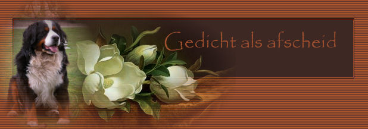

|
|
| 
|
|
Xashake,
onze lieve trouwe viervoeter
altijd was jij onze grootste vriend
je kende ons zo goed
onze lieve jongen We zullen je nooit vergeten Bedankt voor wie je was.
Ik heb dit gedichtje voor hem gemaakt. Ik schrijf nooit gedichten, maar ineens stond dat op papier. Raar maar waar. Daarom ook dat ik het op de website geplaatst heb. |
|
|
Gelieve niets van deze website over te nemen of te claimen als je eigen.
Al deze teksten zijn © van mezelf, of zijn hier geplaatst met toestemming van de schrijver.
Laatst bijgewerkt op
oktober 2015
Webdesign en mail to: Hedera Design